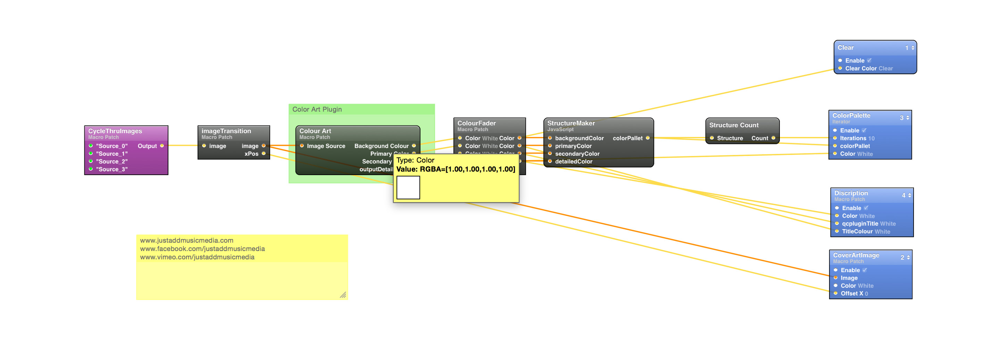

The most famous team in the world make a visit to their F1 garage interactive as well as awe inspiring.
IMMERSE
What did we Create?
We used a graphic programming language Quartz Composer to access Philips office Hue API. With this access we allow you to create application using Quartz Composer and xCode.

OPEN SOURCED
Download the Build and Source Code
Run in Quartz Composer and custom your own preferences